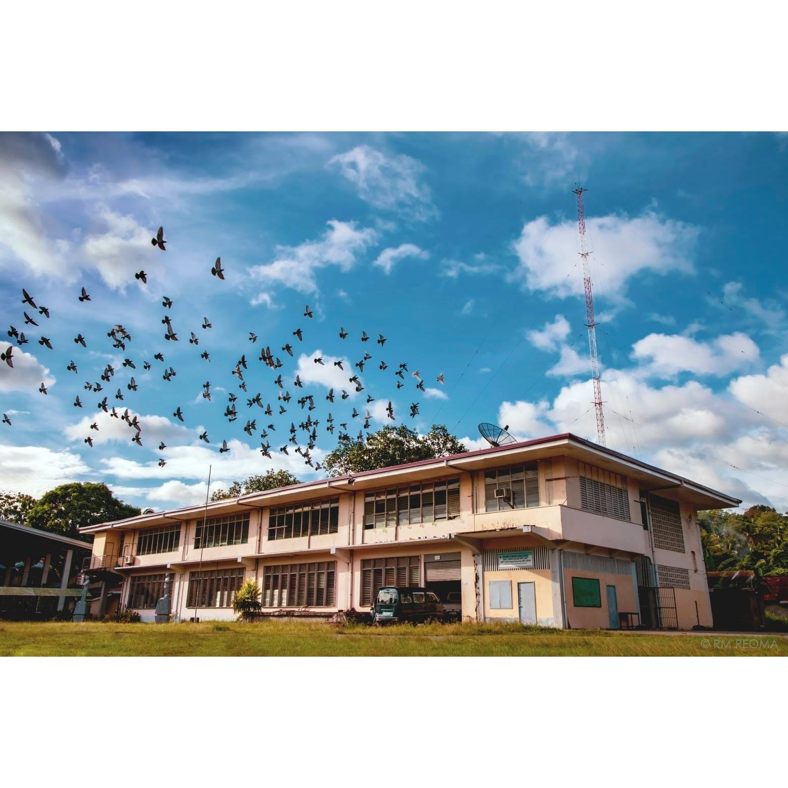

Welcome to Saint Joseph College
At Saint Joseph College, we are dedicated to providing a holistic education that nurtures both the mind and spirit.
Join us in a community where you can thrive academically and personally.
Latest News
New Programs Offered: Exciting new courses in environmental science and digital marketing starting this semester!
Upcoming Events: Join us for the annual college fair on October 15th!
What Our Students Say
"Saint Joseph College has been a life-changing experience for me. The supportive community and excellent faculty helped me grow!" - Student Name
Photo Gallery
Saint Joseph College offers a diverse range of programs:
- Education: Focused on training effective and compassionate educators.
- Business Administration: Equipping students with essential skills in management and entrepreneurship.
- Information Technology: Developing proficiency in computing and information systems.
- Other Fields: Programs in arts, sciences, and hospitality management.
The mission of Saint Joseph College is to foster holistic education that integrates academic excellence with spiritual formation. The college emphasizes the development of the whole person, encouraging students to grow intellectually, emotionally, and spiritually. Core values include:
- Community Service: Students engage in outreach programs, promoting social responsibility.
- Leadership: Cultivating future leaders who are ethical and dedicated to making a positive impact.
- Spiritual Growth: Prioritizing spiritual development rooted in Catholic teachings.
The campus is equipped with modern facilities that support both academic and extracurricular activities:
- Classrooms and Laboratories: State-of-the-art learning spaces.
- Library: A well-resourced library for research and study.
- Recreational Areas: Facilities for sports and extracurricular activities.
- Spiritual Centers: Spaces for reflection and spiritual activities.